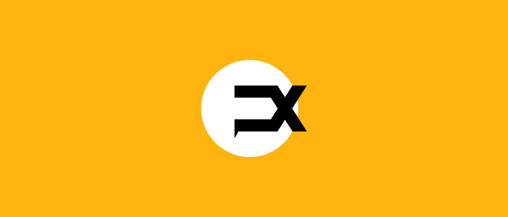
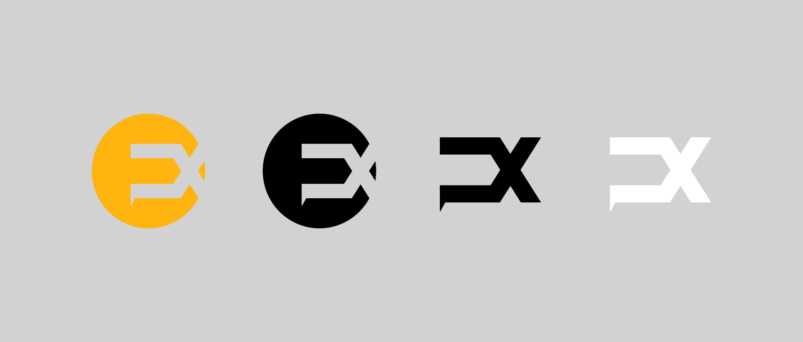
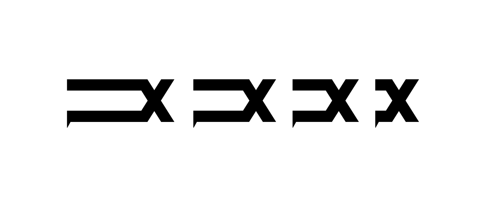

Overview
Undefine x is an apparel brand based in Toronto. Formerly UBX, the new identity needed to modernise in line with their new name, but also to recognise the brand history within their existing community. The logo had to work across a wide range of applications, in particular, embroidery and digital.
The challenge was creating a forward-looking single visual element that was also a strong and recognisable by itself.
Identity
Undefine’s previous name inspired the new symbol, which weaves two forms together like fabric in the form of an "U" and "X". After sketching a few versions on paper, I decided to go with the one with cleaner lines and defined edges.
The logotype shape functions both as a monogram and a memorable symbol that graphically illustrates the brand emphasis on movement and activity, without going too far away from the previous brand.
Secondary elements
For the single visual element, the circle and the “X” come together to suggest movement, going outside of the boundaries and the active lifestyle that the brand embodies.
The brand new logo conveys movement and is dynamic. Offering both the ability to stand alone as well as the flexibility for rotation and elongation, it can be used in endlessly expanding patterns.
Color system
The new symbol appears in black or white over a contemporary and gender neutral color palette of yellow, blue and gray.
The bright, vibrant color palette draws on the dynamic nature of the brand.